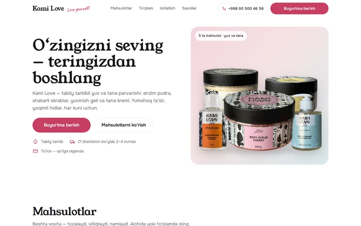
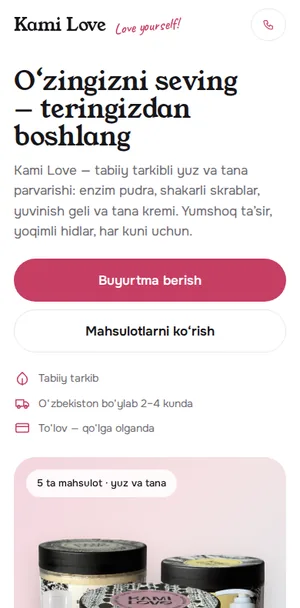

Oq · pastel yorliq ranglari · 5 mahsulot · savat
Oq do‘kon — 5 mahsulot
Har mahsulot o‘z yorlig‘i rangidagi kartada, alohida narx va «Savatga» tugmasi bilan; 290 000 to‘plam, ishlatish qoidalari, Oldin/Keyin, video, savat bilan buyurtma formasi.